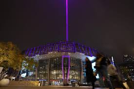

Within the Capital City of California lays a team with a loyal fan base. Although the team has been one of the worst franchises in all of sports history, the fans have never disappointed. Being a Kings fan isn't just about a sport— it's about being part of a community that stands by its team through thick and thin. To be a Kings fan is to be loyal.
- Notable All Time Players
- De'Aaron Fox
- Career PPG: 21.2
- Career APG: 6.5
- Career SPG: 1.3
- Domantas Sabonis
- Career PPG: 15.9
- Career RPG: 10.1
- Career APG: 4.6
- DeMarcus Cousins
- Career PPG: 20.2
- Career RPG: 10.4
- Career BPG: 1.2
- Chris Webber
- Career PPG: 20.7
- Career RPG: 9.8
- Career APG: 4.2
- Peja Stojakovic
- Career PPG: 17.0
- Career 3PT%: 40.1%
- Career FT%: 89.5%
- De'Aaron Fox
- Championships
- 1 NBA Championship (1951)
In the early 2000s, the Sacramento Kings were known for having one of the most dominant big men in the league. Sit back and enjoy some Demarcus Cousins highlights!
NBA Franchise History